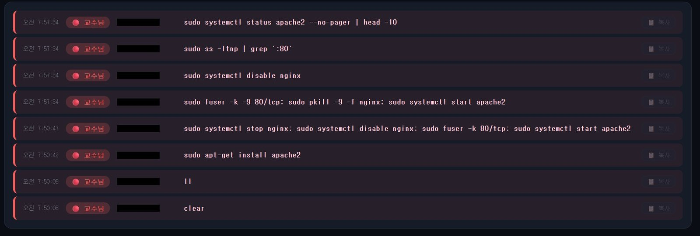
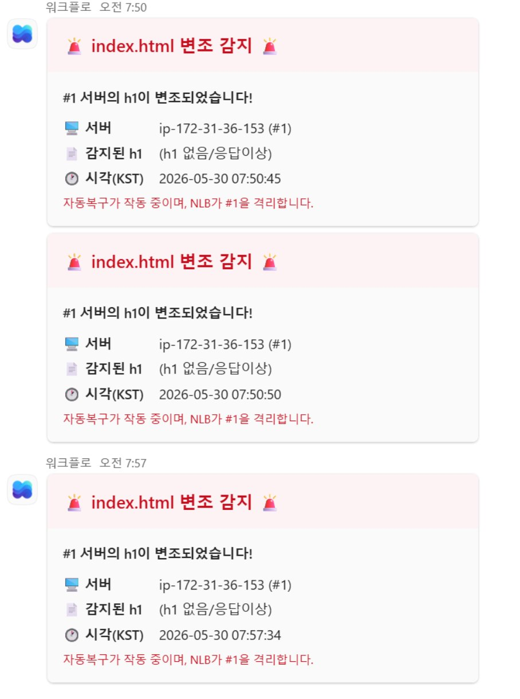
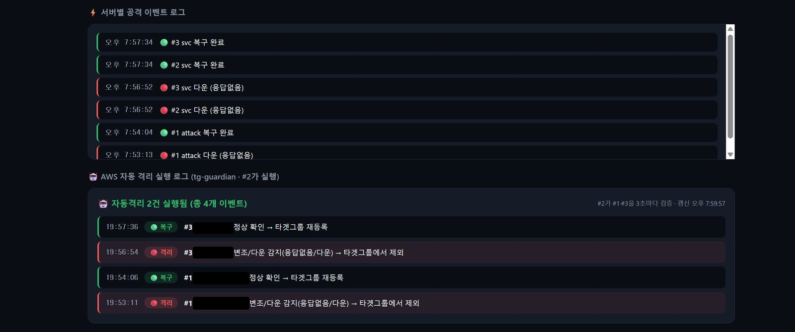

· 장애 대응 · CTF 경기용 AWS · keep-nginx-alive
apache2에 80번 포트를 빼앗긴 2차 공격
2026년 5월 30일 오전 7시 50분, 공격자(교수님)가 #1 서버에 apache2를 설치하고 nginx 대신 80번 포트를 차지했습니다. #1은 헬스체크를 통과하지 못해 대상 그룹에서 빠졌고, NLB는 채점 요청을 #2와 #3으로 보냈습니다. apache2는 팀원이 직접 정리했습니다. 남아 있는 명령 기록과 알림, 이때 관련된 스크립트를 순서대로 정리했습니다.
- 환경
- 공격/방어 CTF 경기용 AWS. NLB 뒤에 EC2 3대(#1은 공격 대상, #2·#3은 #1의 AMI 복제본)
- 증상
- #1의 80번 포트를 apache2가 점유해 채점 페이지의 h1이 사라짐
- 결과
- #1이 대상 그룹에서 빠지고 #2·#3이 응답. 경기 전체 기준 채점 다운 0회
- 역할
- 방어 스크립트·헬스체크·관제 화면은 제가 만들었고, apache2 정리는 팀원이 했습니다
- 관련 작업
- keep-nginx-alive
경기 조건과 구성
챌린지는 금요일 오후 10시부터 일요일 오전 10시까지였습니다. 공격자는 #1에 SSH root로 들어와 프로세스를 죽이거나 특정 포트를 먼저 차지할 수 있었고, 방어 측은 공격자의 권한·접속·명령을 제한할 수 없었습니다. 채점은 5분 간격이고 연속 3회째 오류부터 감점입니다.
제출 주소는 NLB입니다. 80번 리스너 뒤의 대상 그룹 tg-web에 #1·#2·#3을 모두 넣고, 헬스체크는 HTTP /healthz로 했습니다. SSH는 #1에만 열고 #2·#3은 보안 그룹에서 22번을 막았습니다.
공격자가 입력한 명령
#1의 auditd가 잡은 execve 기록을 관제 화면에 띄우고 있었습니다. 2차 공격 구간을 오래된 순서로 옮기면 다음과 같습니다.
# 관제 화면 명령 기록 · 공격자 · 2026-05-30 KST (화면은 최신순, 여기서는 오래된 순)
07:50:08 clear
07:50:09 ll
07:50:42 sudo apt-get install apache2
07:50:47 sudo systemctl stop nginx; sudo systemctl disable nginx; sudo fuser -k 80/tcp; sudo systemctl start apache2
07:57:34 sudo fuser -k -9 80/tcp; sudo pkill -9 -f nginx; sudo systemctl start apache2
07:57:34 sudo systemctl disable nginx
07:57:34 sudo ss -ltnp | grep ':80'
07:57:34 sudo systemctl status apache2 --no-pager | head -10apache2를 설치한 뒤 nginx를 멈추고 자동 시작을 끄고, fuser -k 80/tcp로 80번을 쓰던 프로세스를 정리한 다음 apache2를 띄웠습니다. 7분쯤 뒤에는 -9로 한 번 더 80번을 비우고 nginx 프로세스까지 죽인 뒤, ss로 80번을 누가 잡고 있는지 확인했습니다. 07:57:34의 네 줄은 같은 초로 찍혀 있어서 화면에 표시된 순서를 그대로 따랐습니다.

#1이 먼저 알아챈 것
#1에서는 tamper-alert.sh가 2초마다 http://127.0.0.1:80/을 요청해 응답 본문에 <h1>NginX를 살려라</h1>가 있는지 봅니다. 정상에서 비정상으로 바뀌는 순간에만 Teams로 알림을 보내도록 만들었습니다. 이 구간에는 07:50:45, 07:50:50, 07:57:34 세 번 알림이 왔고, 감지된 h1은 모두 “h1 없음/응답이상”이었습니다.
바뀌는 순간에만 알리므로, 알림이 세 번 왔다는 것은 그 사이에 페이지가 적어도 두 번 정상으로 돌아왔다는 뜻입니다. 공격자가 07:57:34에 다시 80번을 비우고 nginx를 죽인 것도 그 전에 nginx가 80번을 되찾았기 때문으로 보입니다. 다만 그 사이 어느 복구 장치가 nginx를 다시 띄웠는지는 로그로 남기지 못했습니다.

#1이 대상 그룹에서 빠진 경로
평소의 자가격리는 healthz-checker.sh가 맡습니다. 2초마다 같은 기준으로 본문을 검사해 정상이면 ok 파일을 두고, 아니면 지웁니다. nginx는 ok 파일이 있으면 /healthz에 200을, 없으면 503을 돌려주고, NLB는 503을 낸 대상을 빼고 나머지로 요청을 보냅니다.
# scripts/bin/healthz-checker.sh (발췌) · healthz-mon 서비스로 실행
NEEDLE='<h1>NginX를 살려라</h1>'
while true; do
if curl -s -m 3 http://127.0.0.1:80/ 2>/dev/null | grep -qF "$NEEDLE"; then
[ -f /var/www/health/ok ] || echo "healthy" > /var/www/health/ok # 정상 → ok 보장
else
rm -f /var/www/health/ok 2>/dev/null # 오염 → ok 제거(503 유발)
fi
sleep 2
done2차 공격에서는 경로가 조금 달랐습니다. nginx가 멈추고 apache2가 80번을 잡았기 때문에, NLB가 보낸 /healthz 요청도 nginx가 아니라 apache2가 받았습니다. apache2 기본 설정에는 /healthz가 없으니 200이 나오지 않고, 헬스체크는 실패합니다. 503을 직접 내지는 않았지만 결과는 같아서, #1은 unhealthy로 빠지고 채점 요청은 #2·#3이 받았습니다. nginx가 다시 80번을 잡았는데 페이지가 오염된 경우에는 위 스크립트가 ok를 지워 503으로 빠지게 됩니다.
서버 안에서는 5초 주기의 감시 스크립트가 80번 포트를 nginx가 아닌 프로세스가 잡고 있으면 종료하고 nginx를 다시 띄우도록 되어 있었습니다.
# scripts/bin/nginx-watchdog.sh (발췌) · 응답 본문이 비정상일 때만 실행
port_pid=$(ss -ltnp 2>/dev/null | grep ':80 ' | grep -oP 'pid=\K[0-9]+' | head -1)
if [ -n "$port_pid" ] && ! ps -p "$port_pid" -o comm= 2>/dev/null | grep -q nginx; then
…
kill -9 "$port_pid" 2>/dev/null
fi
…
recover_nginx # flock으로 직렬화한 reset-failed + restart#2에서 한 번 더 확인하는 tg-guardian
NLB 헬스체크는 #1이 스스로 내는 /healthz를 그대로 믿습니다. 공격자가 #1 안에서 헬스체크를 조작하면 놓칠 수 있어서, 공격자가 들어올 수 없는 #2에서 tg-guardian이 #1과 #3의 응답을 3초마다 확인하게 했습니다. 변조나 다운을 감지하면 AWS CLI로 대상 그룹에서 빼고, 정상으로 돌아오면 다시 등록합니다.

팀원이 정리한 것
apache2가 패키지로 설치되어 있는 한, 공격자는 언제든 다시 띄울 수 있습니다. 관제 화면과 알림을 보고 있던 팀원이 #1에 접속해 apache2를 수동으로 멈추고 apt purge로 지운 뒤, nginx를 다시 enable해서 80번을 nginx로 돌려놓았습니다. nginx가 정상 페이지를 내자 /healthz가 다시 200을 돌려줬고, #1은 대상 그룹에 healthy로 돌아왔습니다. 팀원이 입력한 명령 줄은 남아 있는 캡처에 없어서 싣지 않았고, 정리한 시각도 기록으로는 확인하지 못했습니다.
저는 헬스체크 자가격리, #2의 tg-guardian, auditd 명령 수집과 관제 화면, Teams 알림을 경기 전에 구성했습니다. 이번 공격은 서버 안의 자동 복구만으로 끝나지 않았고, 채점이 끊기지 않은 것은 #1이 빠진 동안 #2·#3이 응답했기 때문입니다.
apt-mark hold 등으로 미리 막는 일은 남은 과제로 적어 두었습니다.